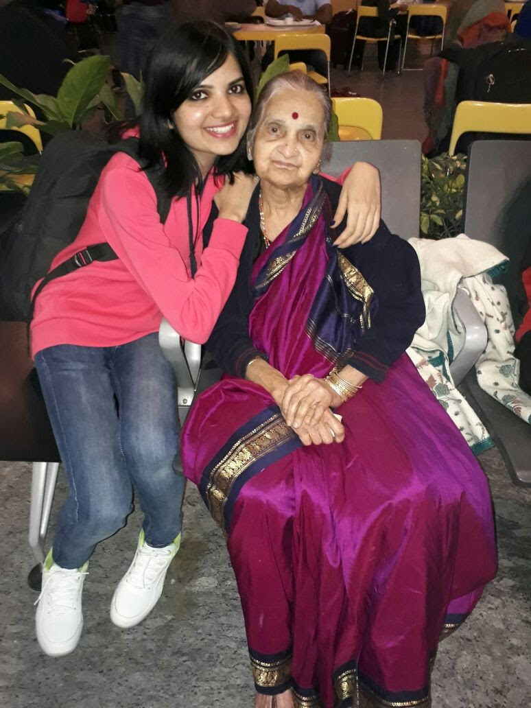

Encomium
An ode to memories that last forever
The greatest storytellers, heroes, source of unconditional love and the keepers of traditions that linger on in our cherished memory. Let us take you on a ride in our time machine when our smiles were as wide as an ocean.
Grandparents
Kulkarni Family
If someone asked me to pick what I was most grateful for in life, it would be to grow under the shade of you both. Undoubtedly, the most selfless, pure, unconditional love I have ever experienced. I was their world and they were mine.
From going and requesting the school principal to give me a consolation prize when I did not win anything that year, never letting my mom raise her voice against me, carrying me in his arms and climbing the Tirumala hills when he was 70+, to immediately getting ready to board the bus to Hassan when I called complaining that my mom has not fed me - my grandfather was the pinnacle of care, a role model for the abundance of knowledge he had and my constant space heater (he wore a lot of sweaters in the 20 degrees of Bangalore weather).

My grandmother, a personification of a 4.10 ft care package, could never stop talking about me or praising me (even when it was not necessary). From forcing me to wake up at 4 am, lighting lamps when the power went off so that I can study for my exams, bringing lunch boxes everyday at 12.30 pm to the school for 10 years, washing my dirty laundry by hand even when I was 20, forcibly watching English horror movies with me and repeatedly asking “where is the devil?” and dozing off when it appeared, complaining that she did not understand anything and I should stop seeing such movies if I am scared - the memories are countless. She would often fall down from the stairs and when I got worried, assure me that she won't die until she sees my wedding. Being on the phone while she took her last breath waiting for me to come to India and get married was the hardest moment of my life.
"The determination with which you waited for my big day makes me hope that you are both going to be there sitting in the front row and watching the live telecast in a special way (the photographer said intra realm live telecast is not offered in the package :-P)"
Rao Family
The fondest memory I have of my grandparents is going to Chamundi hills, sitting in the back of a Kinetic Honda (millennials out there know what this is !). Despite thunder storms and heavy rain on the way back, they shielded me from all the elements. I vividly remember my mother's face when she was in shock, trying to make sense of why there wasn't a single rain drop on any of my clothes. That is how much I was adored, loved and cared for, I was always the most precious life on earth. This still did not change when I had cousins, being the eldest on the maternal side the weight of my responsibilities to be a role model increased. I never was one, in fact I was the naughtiest. They always took my side and kept me away from all sorts of punishments, most of the time. As soon as the school concluded for the year, I couldn't wait for a day to go to Mysore. That's where I had most fun.
My grandfather would take me on a shopping spree to buy the latest and greatest toys every year. Mysore shopping complexes were my Disney Land !. My first game-boy, Nintendo console, Hot Wheels Car(s) and Track, you name it I probably owned it. They spent all their hard earned money to fullfil a little boy's dreams even when they had retired. My grandparents were always admired everywhere they went, they still are, always going out of their way to help people, sharing everything they had, always wishing good for everyone. I am sure my grandmother still misses my grandfather everyday even now, she still carries his aura around her. They are equally responsible for the person I am today, the most treasured and cherished core memories was in their presence. My unquenchable thirst to travel comes from them. They stated a tradition to take all the students who came to tuitions on a trip around Karnataka every year, followed by my parents to this day !
I never had a chance to meet my paternal grandfather but my grandmother is the strongest, fair and vocal women I know. Being a leader seemed to come to her naturally. Maybe having 4 sons brings that out in you. Even today, no decisions are made in my dad's house without consulting her. The grip and loyalty she has on everyone around her, especially ones closest to her is magical yet respected. However, she also has a soft and nurturing side to her. Every time I was in my grandparents home I would fall asleep on her bed, which one one dared to, but felt like I had special privileges. She would scold everyone else if that ever happened, but not me. The fondest memory I have of her is waking us all up on the day of Ganesha Chathurthi and performing all the morning rituals for all the 9 boys in the home. All the cousins (in both grandparents home) always celebrated all the festivals together, so there was never a dull moment, in fact we counted days before we all met. Every year !
She is an excellent cook, something everyone recalls when they mention her. You wouldn't believe the insane amount of friends she has in Jayanagar, Mysore (perks of being a great cook? I wonder !). They used to "hang out" more than any of us did, bhajans and puranas were the chic. Some of her hymns still resonate in my memory and she knew thousands of them, fortunately my dad made me record a few of them, even though I resisted then, I am glad I did today.